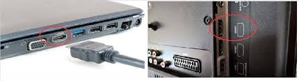

1.Choose a Media Center Software: Select a media center software that best suits your needs. Popular options include Kodi, Plex, and Emby. These programs provide a user-friendly interface for organizing and streaming media.
2.Connect to Your TV: If your laptop has an HDMI port, you can connect it directly to your TV. Alternatively, you can use a HDMI cable to connect your laptop to the TV. This allows you to display the media center interface on the larger screen.
3.Organize Your Media: Transfer your movies, TV shows, music, and other media files to your laptop's storage. Use the media center software to organize and categorize your media library for easy access.

4.Setup Remote Control: Consider using a wireless keyboard/trackpad combo or a remote control to navigate the media center interface from the comfort of your couch.